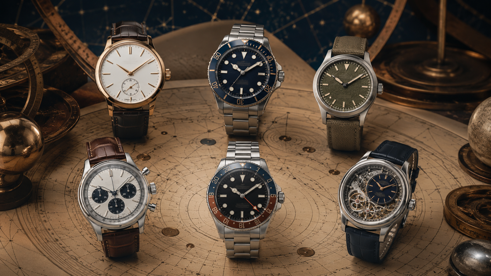

Useful context
Technical terms are connected to everyday comfort, readability and care.
We publish calm, practical education for people who want to understand watches before forming preferences.

Timeless Watch Journal is an independent editorial website. We focus on design literacy, responsible ownership and plain-language explanations. Our content is informational and does not replace manufacturer instructions, professional appraisal or specialist servicing.
We do not promise financial returns, guaranteed accuracy, universal water resistance or a particular ownership outcome. When specifications matter, readers should verify the exact reference with the manufacturer or seller.
Technical terms are connected to everyday comfort, readability and care.
We avoid manufactured urgency, unsupported superlatives and speculative claims.
Editorial topics are selected for their educational value, not to imitate professional advice.